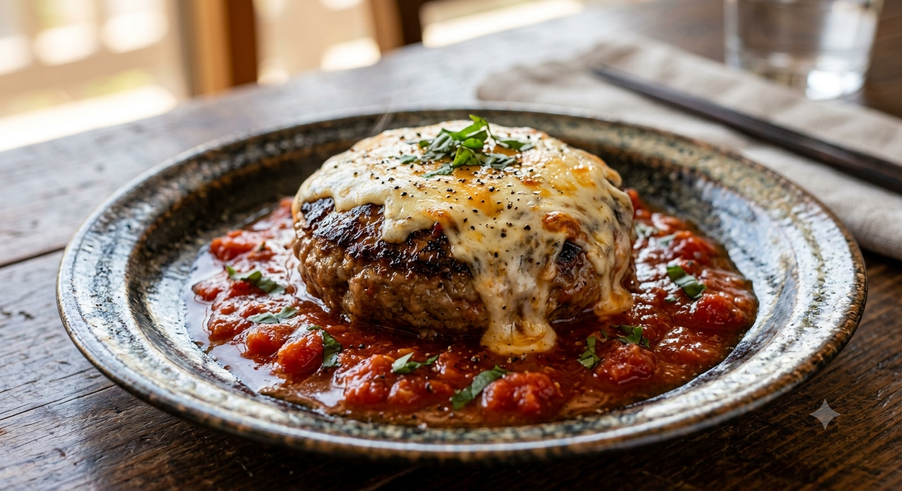

とわいらいと

名物：チーズハンバーグ（アウト）
私たちのハンバーグは、ただ柔らかいだけではありません。肉の弾力と旨みを最大限に引き出すため、挽き方にこだわり、一つひとつ丁寧に手捏ねしています。 ナイフを入れた瞬間に溢れ出す肉汁は、まさに芸術。
人気の「イン・アウト」チーズ
チーズを中に包み込む「イン」、上から豪快にかける「アウト」。その日の気分でお選びいただけます。
男性の拳より大きい、圧倒的なボリューム。
三種類の自家製ドレッシングで味わう大盛りサラダ。
生臭さゼロ。大ぶりのエビが躍る絶品グラタン。
「平日でも開店前から並ぶ理由がわかりました。ハンバーグを割ると肉汁がたっぷりと流れ出る。チーズもこれでもかというくらい掛かっていて最高です。」
— 2025年8月ご来店のお客様
「エビドリアを一口食べて『ウンマ！』となりました。ホワイトソースにタバスコ、これが必需品。駐車場も多くて安心です。」
— リピーターのお客様
いつも「とわいらいと」をご愛顧いただきありがとうございます。皆様のご要望にお応えし、現在以下のサービスを順次準備しております。
混雑時も車内やお近くで快適にお待ちいただけるよう、LINEやスマホで順番確認・呼び出しができるシステムを導入準備中です。
「サラダが止まらなくなる」と大評判の自家製ドレッシング。お客様のご要望にお応えし、ご自宅用のお持ち帰りボトル化を進めています。
溢れる肉汁と自慢のデミグラスソースを真空急速冷凍。「遠方で通えない」「大切な人に贈りたい」に応えるオンラインストアを開設予定です。
〒004-0867 北海道札幌市清田区北野7条2丁目11−25
11:00 〜 20:00
定休日：日曜日・月曜日
駐車場：10台完備（店横・薬局裏）
決済：現金のみ
全席禁煙（子供椅子あり）